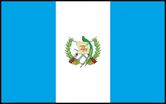
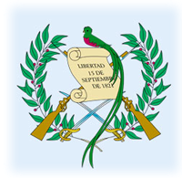
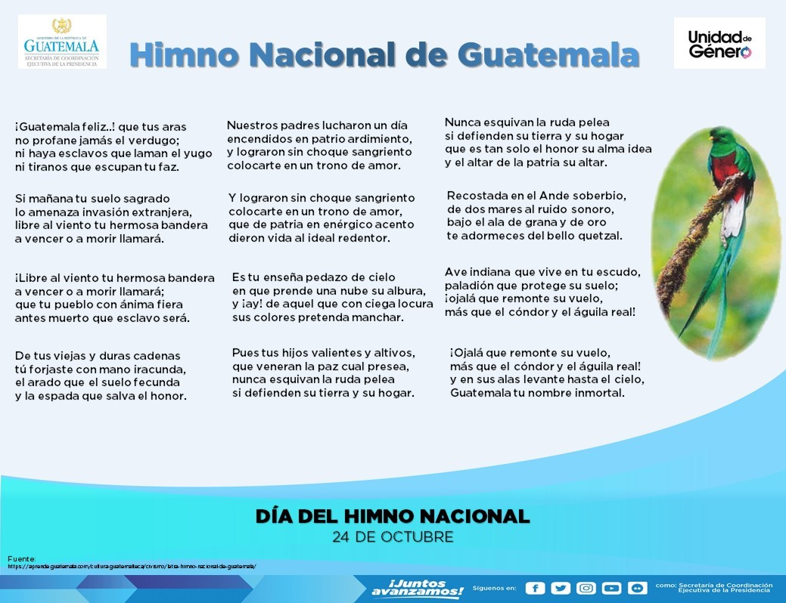
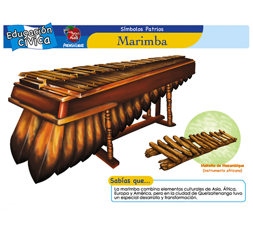

Bienvenido a nuestra página sobre Guatemala
Guatemala (del náhuatl Cuauhtemallan, ‘lugar de muchos árboles’), oficialmente la República de Guatemala, es un país soberano situado en el extremo noroccidental de América Central tiene volcanes, bosques tropicales, manglares, playas de arena volcánica y antiguos sitios mayas. Su capital y ciudad más poblada es Ciudad de Guatemala, es el 11º país más poblado de América y su economía es la más grande de América Central. Según su constitución, es una república democrática y representativa organizada para su administración en 22 departamentos. Su capital y ciudad más poblada es la Ciudad de Guatemala, cuyo nombre oficial es Nueva Guatemala de la Asunción. Sus fronteras colindan al norte y al oeste con México, al este con Belice y Honduras y al sur con El Salvador. Cuenta con litoral hacia el océano Pacífico y hacia el golfo de Honduras. Es el país más poblado de Centroamérica, con 18 607 184 de habitantes según el censo realizado en el año 2022. Asimismo, el Área metropolitana de Guatemala cuenta con una población de 5 301 286 habitantes y una extensión territorial de 2253 km², lo que la convierte en el Área metropolitana más extensa y con mayor número de habitantes de América Central. A su vez, en la actualidad la economía de Guatemala es considerada la más grande de Centroamérica. La geografía de Guatemala tiene una gran variedad climática a pesar de su pequeña extensión territorial debido en gran medida a su relieve montañoso con altitudes que van desde el nivel del mar hasta los 4220 metros por encima de ese nivel. Esto propicia que en el país existan ecosistemas tan variados que van desde los manglares de los humedales del Pacífico hasta los bosques de montaña. El país posee una superficie de 108 889 km².El idioma oficial es el español, si bien se trata de un país multicultural y plurilingüe en el que existen veintidós idiomas mayas e idiomas como el xinca y el garífuna hablado regularmente en el departamento caribeño de Izabal, aunque se consideran en ‘peligro de extinción’. El territorio donde actualmente se ubica Guatemala forma parte del área denominada Mesoamérica y en él se empezó a desarrollar una parte importante de la cultura maya, razón por la que es también conocido como el "corazón del mundo maya", extendiéndose dicha civilización a los países limítrofes. Tras la conquista de Guatemala, este territorio pasó a formar parte del Virreinato de Nueva España como la Capitanía General de Guatemala. A partir de la Independencia de Guatemala en 1821, las provincias que conformaban el entonces Reino de Guatemala y el cual abarcaba a los actuales países de El Salvador, Honduras, Nicaragua y Costa Rica aceptaron la invitación del emperador de México Agustín de Iturbide para formar parte del Primer Imperio Mexicano, entidad política que no duraria mucho tiempo. Después de la disolución del imperio, Guatemala pasó a formar parte de la República Federal de Centroamérica junto a los países centroamericanos anteriormente mencionados. La actual forma de gobierno de Guatemala se estableció en el año de 1847, cuando se proclamó la creación de la República de Guatemala y el país empezó a abrirse con las naciones vecinos estableciendo relaciones diplomáticas con algunas potencias del mundo. Tras el triunfo de una reforma liberal en 1871 se establecieron una serie de regímenes dictatoriales y poco democráticos que duraron hasta 1944, año en el que estalló la Revolución de Guatemala de 1944. Dicha revolución perduró hasta 1954, año en el que un golpe de Estado retomó el poder del país y precipitó al país a una guerra civil, también llamado “el conflicto armado interno de Guatemala”, que comenzó en 1960 a 1996. Ya en el siglo XXI, Guatemala contó con una política económica relativamente estable que lo posiciona actualmente como la novena economía en Latinoamérica. Sin embargo, los niveles de pobreza y desigualdad de ingresos siguen siendo altos. Por ello, los guatemaltecos deben promover los principios básicos del bien común, la solidaridad, y la subsidiaridad y el desarrollo económico y social -acceso al alimento, vestido, salud, trabajo, educación y cultura, etc.- apoyados por el fomento por sus poderes públicos nacionales de la iniciativa particular y asociada para permitir así mejorar las condiciones de vida de los guatemaltecos, los matrimonios y sus familias.
Historia de Guatemala
El adjetivo tumultuoso no basta para describir los sucesos que este trozo de tierra ha vivido en los últimos milenios. Grandes imperios han surgido y caído, llegaron los conquistadores y se fueron, y la población se ha visto atrapada una y otra vez en el fuego cruzado de las guerras.
Período preclásico (2000 a.C.-250 d.C.)
Se cree que esta época coincidió con la aparición de estructuras sociales estables y formas arcaicas de agricultura, cerámica y fabricación de herramientas en el territorio que hoy corresponde a México y Guatemala. La mejora en la alimentación dio lugar a un aumento de la población, un mejor nivel de vida y avances en las técnicas agrícolas y artísticas. Se produjeron vasijas decorativas y mazorcas de maíz más gruesas y sanas. Incluso al inicio del período, los habitantes de Guatemala ya hablaban una versión primitiva de la lengua maya. Hacia mediados del período preclásico (800-300 a.C.), en el valle de Copán vivían pueblos ricos y se habían fundado poblados junto a lo que sería la ciudad de Tikal, en la selva de El Petén. Se abrieron rutas comerciales entre los pueblos de la costa y las tribus del altiplano que intercambiaban sal y conchas marinas por obsidiana para construir herramientas. A medida que los mayas perfeccionaron sus técnicas agrícolas, surgió una clase noble que construyó templos a partir de plataformas elevadas de terreno, coronadas por un refugio con tejado de paja, bajo el cual se enterraba al potentado local, lo que incrementaba el poder sagrado del recinto. Estos templos se han descubierto en Uaxactún, Tikal y en El Mirador. Kaminaljuyú, en Ciudad de Guatemala, alcanzó su cenit entre los años 400 a.C. y 100 d.C., con miles de habitantes y numerosos templos sobre montículos. En El Petén, donde abundaba la caliza, los mayas construyeron templos sobre plataformas de piedra. A medida que los sucesivos potentados locales exigían tener un templo mayor que el del líder predecesor, se iban edificando plataformas cada vez mayores sobre las ya existentes, lo que dio lugar a enormes pirámides. Se cree que la pirámide del Tigre, en El Mirador, de 18 pisos de altura, es la mayor construida por los mayas. El terreno quedó así abonado para que floreciera la civilización maya clásica.
Período clásico (250-900)
En este período, los mayas se organizaron en numerosas ciudades-estado. Mientras Tikal adquiría un papel central hacia el año 250, El Mirador había sido misteriosamente abandonado un siglo antes. Algunos expertos creen que debido a una grave sequía. Cada una tenía su casa aristocrática, encabezada por un rey-sacerdote que aplacaba a los dioses derramando su sangre al perforarse la lengua, el pene o las orejas con objetos punzantes. Como dirigente sagrado de su comunidad, el rey también debía liderar a sus soldados en las batallas contra ciudades rivales, en las que se capturaba a prisioneros para los sacrificios humanos. Una ciudad maya típica funcionaba como centro religioso, político y comercial de las aldeas campesinas circundantes. Su centro ceremonial estaba formado por plazas rodeadas de altos templos piramidales y edificios más bajos con numerosas estancias. Estelas y altares se cubrían de inscripciones con fechas, historias y elaboradas representaciones humanas y divinas. En la primera parte del período clásico, lo más probable es que casi todas las ciudades-estado se agruparan en dos alianzas militares genéricas, centradas en Calakmul, en el estado mexicano de Campeche, y Tikal. A finales del s. VIII disminuyó el comercio entre los estados mayas y aumentaron los conflictos. A principios del s. X, las ciudades de Tikal, Yaxchilán, Copán, Quiriguá y Piedras Negras habían quedado reducidas a pueblos y gran parte de El Petén había sido abandonado. Hay muchas teorías para explicar la caída de la civilización maya clásica, tales como la presión demográfica, la sequía y el deterioro ecológico.
Período posclásico (900-1524)
Se cree que algunos de los mayas que abandonaron El Petén se trasladaron al suroeste, hacia las montañas de Guatemala. En los ss. XIII y XIV se unieron a ellos mayas toltecas de las regiones mexicanas de Tabasco y Yucatán. Varios grupos de estos recién llegados fundaron una serie de estados rivales en las montañas guatemaltecas. Los más importantes fueron el quiché (o k’iche’; con capital en Gumarcaaj, cerca de la actual Santa Cruz del Quiché), el cachiquel (con capital en Iximché, cerca de Tecpán), los mam (con capital en Zaculeu, cerca de Huehuetenango), los zutujil (con capital en Chuitinamit, cerca de Santiago Atitlán) y los pocomam (con capital en Mixco Viejo, al norte de Ciudad de Guatemala). Los itzaes de Yucatán se asentaron en el lago de Petén Itzá, en El Petén, en la isla hoy llamada Flores.
La conquista española
Hernán Cortés derrotó al Imperio azteca, cuyo centro era Tenochtitlán (la actual Ciudad de México), en 1521. Uno de sus capitanes, Pedro de Alvarado, llegó a Guatemala en 1524. Allí forjó alianzas temporales con los grupos mayas y sometió a los pueblos rivales, para luego hacer estragos entre sus propios aliados mayas. La única excepción notable fueron los rabinales, en la actual Baja Verapaz, que sobrevivieron con su identidad prehispánica intacta. Alvarado trasladó su base a Santiago de los Caballeros (la actual Ciudad Vieja) en 1527, pero poco después de su muerte, en 1541, fue destruida por una inundación. La capital se trasladó de nuevo con el mismo nombre a un lugar cercano, a la actual Antigua.
Período colonial (1524-1821)
Los colonizadores esclavizaron a la población indígena para que trabajaran la tierra. Negarse comportaba la muerte. Pero a América también llegó la Iglesia católica y, con ella, el fraile dominico Bartolomé de las Casas, que había presenciado el casi total exterminio de los indios de Cuba y La Española. Horrorizado, consiguió que Carlos I de España promulgara las Leyes Nuevas de 1542, que ponían fin al sistema de trabajos forzados. En la práctica continuaron, pero evitó la desenfrenada devastación de los mayas; fray Bartolomé y otros misioneros empezaron a convertirlos al cristianismo. Se puede atribuir gran parte del éxito evangelizador a su enfoque pacífico, el relativo respeto que mostró hacia las creencias tradicionales y la educación que impartía en las lenguas indígenas.
Independencia
Cuando los guatemaltecos empezaron a plantearse la independencia de España, la sociedad estaba rígidamente estratificada. Los españoles nacidos en Europa eran los únicos que tenían verdadero poder; los criollos (españoles nacidos en Guatemala) dominaban a los ladinos (mestizos de sangre española y maya); y estos explotaban a la población india, relegada al peldaño más bajo de la escala socioeconómica. Hartos de ser menospreciados en aras del progreso, los criollos guatemaltecos se sublevaron en 1821. Pero la independencia supuso pocos cambios para las comunidades indígenas. México, recién independizado, no tardó en anexionarse el territorio guatemalteco, pero en 1823 Guatemala reafirmó su independencia y lideró la formación de las Provincias Unidas de Centroamérica (creadas el 1 de julio de 1823), junto con El Salvador, Nicaragua, Honduras y Costa Rica. Su unión, debilitada por enfrentamientos civiles desde el principio, solo duró hasta 1840. Ese período aportó prosperidad a los criollos, pero empeoró la suerte de los mayas guatemaltecos. El final del dominio español significó el abandono de las escasas salvaguardas liberales de la Corona, que habían proporcionado a los mayas un mínimo de protección
Los liberales y Carrera
Las clases dirigentes se dividían en dos bandos: la élite conservadora, que incluía a la Iglesia católica y a los grandes terratenientes; y los liberales, que habían sido los primeros en defender la independencia. La breve sucesión de líderes liberales llegó a su fin cuando las políticas económicas impopulares y una epidemia de cólera desencadenaron una revuelta indígena que llevó al poder a Rafael Carrera, un criador de cerdos ladino conservador. Se mantuvo en el poder de 1844 a 1865, período en que suprimió muchas de las reformas liberales anteriores y cedió el control de Belice a Gran Bretaña a cambio de una carretera entre Ciudad de Guatemala y la capital de Belice que nunca llegó a construirse.
Reformas liberales de J. R. Barrios
Los liberales volvieron al poder en la década de 1870, primero con Miguel García Granados y después con Justo Rufino Barrios, el joven y rico propietario de una plantación de café que gobernó como un dictador entre 1873 y 1879. Modernizó carreteras, ferrocarriles, escuelas y el sistema bancario, y favoreció desmesuradamente la floreciente industria cafetera. Bajo el gobierno de sus sucesores, un pequeño grupo de familias comerciantes y terratenientes se hizo con el control de la economía, se otorgaron generosas concesiones a compañías extranjeras y se censuró, encarceló o exilió a los opositores.
Estrada Cabrera
Manuel Estrada Cabrera gobernó de 1898 a 1920, y logró progresos en cuestiones técnicas, aunque imponiendo una pesada carga a toda la población, excepto a la oligarquía gobernante. Se definía a sí mismo como “maestro y protector de la juventud guatemalteca”. Como reacción al doble lenguaje de Cabrera, se inició la llamada “Huelga de Dolores”. Estudiantes de la Universidad de San Carlos de Ciudad de Guatemala tomaron las calles en Cuaresma –con capuchas para evitar represalias– en protesta contra la injusticia y la corrupción. La tradición arraigó en todo el país y culminó en un desfile por las calles principales el viernes previo al Viernes Santo que aún se celebra.
Jorge Ubico
Estrada Cabrera fue derrocado en 1920 y Guatemala entró en un período de inestabilidad que terminó en 1931 con la elección del general Jorge Ubico como presidente, quien hizo especial hincapié en la honradez del Gobierno y modernizó las infraestructuras sanitarias y sociales. Su gobierno terminó cuando fue obligado a exiliarse en 1944.
J. J. Arévalo y J. Arbenz
Cuando parecía que Guatemala estaba condenada a una sucesión de dictadores, las elecciones de 1945 llevaron a la presidencia al filósofo Juan José Arévalo. Ocupó el cargo hasta 1951, creó el sistema de seguridad social, una oficina de asuntos indígenas, un sistema moderno de sanidad pública y una legislación laboral de tintes liberales. Además, sobrevivió a 25 intentos de golpe de Estado por militares conservadores. Su sucesor, el coronel Jacobo Arbenz, continuó en la línea de su predecesor: introdujo reformas agrarias para facilitar una productividad alta en explotaciones pequeñas. También expropió grandes extensiones de terreno concedido a la United Fruit Company durante los mandatos de Estrada Cabrera y de Ubico. Se pagaron compensaciones por el valor que la compañía había declarado (muy por debajo del valor real) y se anunció que las tierras se redistribuirían entre los campesinos. Este anuncio disparó las alarmas en Washington; en 1954, en una de las primeras operaciones encubiertas documentadas por la CIA, EE UU orquestó una invasión desde Honduras. Arbenz dejó el cargo y la reforma agraria nunca se materializó. Tras él hubo varios presidentes militares. Un apoyo más encubierto, pero bien documentado, provino de EE UU en forma de dinero y adiestramiento de la contrainsurgencia. La violencia se convirtió en una constante en la política, las reformas agrarias se revirtieron, el derecho a voto se condicionó a la alfabetización (privando de sus derechos a casi un 75% de la población), la policía secreta se restituyó y la represión militar fue constante. En 1960 se empezaron a formar guerrillas de izquierdas.
Inicio de la guerra civil
La industria de Guatemala se desarrolló rápidamente, pero el tejido social se iba tensando cada vez más. Los sindicatos se organizaron y la emigración hacia las ciudades, en particular a la capital, originó la urbanización irregular y la aparición de barrios de chabolas. Se implantó un ciclo de represión violenta y de protestas. En 1979, Amnistía Internacional calculaba que durante la violencia política de esa década habían sido asesinadas de 50 000 a 60 000 personas. En 1976, un grave terremoto causó la muerte de 22 000 personas y dejó sin hogar a un millón. Solo una parte muy pequeña de la ayuda enviada a las víctimas llegó a sus destinatarios.
La década de 1980
A principios de la década de 1980, cuatro grupos guerrilleros se unieron formando la URNG (Unidad Revolucionaria Nacional Guatemalteca), y la represión militar de elementos contrarios al Gobierno en el campo alcanzó su punto álgido, en especial con la presidencia del general Efraín Ríos Montt, cristiano evangélico que se hizo con el poder mediante un golpe de Estado en marzo de 1982. En nombre de la contrainsurgencia, la estabilización y el anticomunismo, se asesinó a un gran número de personas de más de 400 aldeas, sobre todo hombres indígenas. Se llegó a estimar que unos 15 000 civiles murieron como consecuencia de las operaciones de contrainsurgencia durante el mandato de Ríos Montt, por no hablar de los más de 100 000 refugiados, según diversas estimaciones, que huyeron a México, casi todos mayas. El Gobierno obligó a los aldeanos a formar Patrullas de Autodefensa Civil (PAC), que más tarde fueron acusadas de graves atrocidades contra los derechos humanos. A medida que la guerra civil se prolongaba y en ambos lados se perpetraban brutalidades, cada vez más habitantes de las zonas rurales se vieron atrapados en el fuego cruzado. En agosto de 1983 Ríos Montt fue depuesto por el general Oscar Humberto Mejía Victores, pero los abusos continuaron. Los supervivientes fueron conducidos a remotas “aldeas modelo” rodeadas por campamentos militares. A raíz de los constantes informes de que se violaban las libertades y se masacraba a civiles, EE UU interrumpió su ayuda militar a Guatemala, lo cual propició la elección en 1986 de un presidente civil, el cristianodemócrata Marco Vinicio Cerezo Arévalo. Se depositaron grandes esperanzas en que la administración de Cerezo Arévalo templara los excesos de la élite dirigente y del ejército, y estableciera las bases para una democracia verdadera. Pero el conflicto armado siguió vivo en algunas zonas remotas y, cuando terminó el mandato en 1990, muchos se preguntaron si realmente se había avanzado en algo.
Principios de la década de 1990
El presidente Jorge Serrano, del conservador Movimiento de Acción Solidaria, reabrió el diálogo con la URNG, con la esperanza de terminar con una guerra civil que duraba décadas. Cuando las conversaciones fracasaron, el mediador de la Iglesia católica culpó a ambas partes de intransigencia. Durante este período continuaron los abusos, a pesar de que el país había vuelto a la democracia. En 1990, en un caso dramático, la antropóloga guatemalteca Myrna Mack, que había documentado la violencia del ejército contra la población rural maya, quedó herida de muerte tras ser cosida a puñaladas. El exjefe de la guardia presidencial, el coronel Juan Valencia Osorio, fue declarado culpable de planear el asesinato y sentenciado a 30 años de prisión, aunque consiguió pasar a la clandestinidad antes de ser arrestado. La presidencia de Serrano dependía cada vez más del apoyo del ejército. En 1993 trató de hacerse con el poder absoluto, pero tras unos días de tensión, se le obligó a exiliarse. El Congreso nombró presidente a Ramiro de León Carpio, conocido por sus críticas a la mano dura del ejército.
Los acuerdos de paz
Álvaro Arzú, del centroderechista Partido de Avanzada Nacional (PAN), sucesor electo de Ramiro de León desde 1996, continuó las negociaciones con la URNG hasta que el 29 de diciembre de 1996 se firmó en el Palacio Nacional de Ciudad de Guatemala un “Acuerdo de Paz firme y duradera”. Se calcula que durante los 36 años de guerra civil murieron 200 000 guatemaltecos, un millón perdió sus casas y no se sabe cuántos miles desaparecieron.
Guatemala a partir de los acuerdos de paz
Toda la esperanza de que Guatemala se convirtiera en una sociedad justa y democrática se ha ido desvaneciendo desde 1996. Las organizaciones internacionales critican a menudo la situación en el país y muchos guatemaltecos defensores de los derechos humanos reciben amenazas o desaparecen. Siguen lejos de resolverse los principales problemas (pobreza, analfabetismo, falta de educación y deficiencias sanitarias), más comunes en las zonas rurales, donde se concentra la población maya. Alfonso Portillo, del conservador Frente Republicano Guatemalteco (FRG), ganó las elecciones presidenciales de 1999. Era considerado el testaferro del líder del FRG, el expresidente Ríos Montt. Al final de su mandato, Portillo huyó del país ante las acusaciones de haber desviado 500 millones de US$ del Tesoro hacia cuentas bancarias personales y familiares. Eludió la justicia durante años, pero finalmente fue acusado por EE UU de blanquear dinero a través de bancos estadounidenses; tras cumplir condena de un año y medio es ese país, en el 2015 regresó a Guatemala. Ríos Montt obtuvo el permiso del Tribunal Constitucional guatemalteco para presentarse a las elecciones del 2003, a pesar de que la Constitución se lo prohibía por haber protagonizado un golpe de Estado en 1982.
Berger y la ‘nueva’ Guatemala
Ríos Montt sufrió una rotunda derrota frente a Oscar Berger, de la Gran Alianza Nacional (GANA), moderadamente conservadora, que fue elegido presidente. Berger se mantuvo relativamente al margen de escándalos políticos; según sus críticos, porque en realidad no hacía nada, ni bueno ni malo. En el 2006, Guatemala ratificó el Tratado de Libre Comercio (TLC). Sus partidarios sostienen que asegura una mayor presencia del país en los mercados internacionales, mientras que sus detractores afirman que perjudica a los campesinos pobres. La elecciones de finales del 2007 llevaron al poder a Álvaro Colom, de la Unidad Nacional de la Esperanza (UNE), de centroizquierda. Siguió el ejemplo de Berger al aplicar un gobierno estable y minimalista, e impulsó mejoras en las infraestructuras. Pero su presidencia se vio manchada por la corrupción. Quizá el giro más estrambótico de la presidencia de Colom tuvo lugar a su término. Sabiendo que la Constitución guatemalteca prohíbe a los miembros de la familia del presidente concurrir a las elecciones siguientes para evitar las dictaduras, Colom y su esposa interpusieron una demanda de divorcio para que ella pudiera ser candidata. Sin embargo, el Tribunal Constitucional prohibió su candidatura, dejando el paso libre a la línea dura del exgeneral de la guerra civil Otto Pérez Molina, que asumió el cargo a principios del 2012. La elección de Pérez Molina fue polémica; había sido general del ejército de Ríos Montt. No obstante, los guatemaltecos ya se habían cansado del desgobierno e hicieron tabla rasa con la esperanza de que Molina cumpliera sus dos promesas electorales: trabajo y seguridad. A pesar de algunas reacciones severas contra los manifestantes (el ejército mató a siete e hirió a 40 durante una protesta contra las presas y las minas), Pérez Molina hizo poco para combatir la verdadera delincuencia, y el inicio de su mandato se vio salpicado por rumores de corrupción. En abril del 2015, CICIG, la agencia anticorrupción de la ONU, publicó un informe y todo se volvió mucho menos impreciso. El informe decía que varios miembros del gabinete de Pérez Molina habían aceptado sobornos de los importadores a cambio de reducciones en los aranceles. En cuestión de días se organizaron protestas masivas y decenas de miles de personas ocuparon el centro de Ciudad de Guatemala. La vicepresidenta Roxana Baldetti fue la primera en marcharse: dimitió al no poder explicar, entre otras cosas, cómo había pagado los 13 millones de US$ de su helicóptero. En los meses siguientes dimitieron más de 20 altos cargos y muchos fueron detenidos a medida que el escándalo ascendía. Las protestas continuaron conforme se descubrían más cosas. Baldetti fue detenida en agosto entre apelaciones al procesamiento de Pérez Molina. El presidente resistió algunas semanas más y por último dimitió y fue detenido.
Los Simbolos de Guatemala
Los símbolos patrios de Guatemala son elementos que representan y fortalecen la identidad nacional del país. Estos símbolos son importantes para demostrar el amor a la patria a través del civismo. A continuación, se presentan los principales símbolos patrios de Guatemala:
La Bandera
es uno de los símbolos patrios más prominentes. Consta de tres franjas verticales de igual tamaño: la franja blanca en el centro representa la pureza y la integridad, mientras que las franjas azules a los costados simbolizan el cielo que cubre el país y los dos océanos que lo bañan, el Atlántico y el Pacífico. En el centro de la franja blanca, se encuentra el escudo de armas de Guatemala.
El Escudo de Armas Guatemalteco
El escudo de armas guatemalteco es otro símbolo patrio de gran importancia. Está compuesto por una serie de elementos que representan la historia precolombina, la colonización española y la independencia. En el centro del escudo se encuentra un quetzal, el ave nacional de Guatemala, en actitud de vuelo. El quetzal es un símbolo de libertad y es considerado sagrado por las culturas indígenas. A ambos lados del quetzal, hay dos rifles de musketa, que simbolizan la lucha por la independencia y la defensa de la soberanía.
El Himno Nacional de Guatemala
El Himno Nacional de Guatemala es otra manifestación patriótica. Compuesto por Rafael Álvarez Ovalle en 1897, este himno exalta los valores patrios y la historia del país. Sus letras evocan la belleza de la tierra guatemalteca y la lucha de sus habitantes por la libertad. La música es solemne y emotiva, convirtiéndolo en un componente esencial de las celebraciones cívicas y patrióticas.
El Quetzal

El Quetzal es el ave nacional de Guatemala y un símbolo icónico de la nación. Su nombre proviene del náhuatl "quetzalli", que significa "pluma preciosa". Este hermoso pájaro de colores vivos y llamativos es considerado sagrado en las tradiciones mayas, y su imagen aparece en artefactos y monumentos antiguos. Su presencia en la flora y fauna guatemalteca refleja la riqueza natural y la biodiversidad del país.
La Marimba
La Marimba, un instrumento musical de percusión similar al xilófono, es una representación de la identidad cultural guatemalteca. Su dulce y melódico sonido es parte integral de festividades y eventos importantes. La marimba es utilizada tanto en la música tradicional como en la contemporánea, y simboliza la diversidad y la riqueza cultural de Guatemala.
La Extensión Territorial en Guatemala
Guatemala es un país ubicado en América Central, y su territorio forma parte del área denominada Mesoamérica. El territorio de Guatemala es montañoso, y cuenta con una extensión territorial de 108,889 km². Además, tiene unos 400 km de costas rodeadas por los océanos del Pacífico y Atlántico. Guatemala se compone de 22 departamentos, cuyas extensiones territoriales varían desde los 465 km² de Sacatepéquez hasta los 35,854 km² de Petén. A continuación, se presenta una lista de los departamentos de Guatemala y su extensión territorial, según :
| Departamentos | Extensión Territorial |
|---|---|
| Alta Verapaz | 8,686 km2 |
| Baja Verapaz | 3,124 km2 |
| Chimaltenango | 1,979 km2 |
| Chiquimula | 2,376 km2 |
| El Progreso | 1,445 km2 |
| Escuintla | 4,384 km2 |
| Guatemala | 2,126 km2 |
| Huehuetenango | 7,403 km2 |
| Izabal | 9,038 km2 |
| Jalapa | 2,063 km2 |
| Jutiapa | 3,219 km2 |
| Petén | 35,854 km2 |
| Quetzaltenango | 1,951 km2 |
| Quiché | 8,378 km 2 |
| Retalhuleu | 1,853 km2 |
| Sacatepéquez | 465 km2 |
| San Marcos | 2,397 km2 |
| Santa Rosa | 2,337 km2 |
| Sololá | 1,190 km2 |
| Suchitepéquez | 2,446 km2 |
| Totonicapán | 1,061 km2 |
| Zacapa | 2,516 km2 |
En resumen, Guatemala cuenta con una extensión territorial de 108,889 km², y está ubicado en América Central. Su territorio es montañoso y cuenta con unos 400 km de costas. Además, se compone de 22 departamentos, cuyas extensiones territoriales varían desde los 465 km² de Sacatepéquez hasta los 35,854 km² de Petén.
Turismo en Guatemala
Guatemala es un destino turístico popular en Centroamérica debido a su riqueza cultural y natural, así como a su ubicación geográfica privilegiada. A continuación, se presentan algunos aspectos relevantes del turismo en Guatemala:
- Atracciones turísticas: Entre las atracciones turísticas del país destacan el parque nacional Tikal,
declarado Patrimonio de la Humanidad por la Unesco en 1979 por sus ruinas antiguas de la cultura
mesoamericana, la ciudad colonial de Antigua Guatemala, también Patrimonio de la Humanidad en 1979 por
su inmenso valor histórico y cultural, y sus paisajes montañosos y enclaves arqueológicos mayas
(Quiriguá en Izabal, Iximché en Tecpán Chimaltenango, y en la Ciudad de Guatemala)
- Tipos de turismo: En Guatemala, se pueden realizar diferentes tipos de turismo, como el turismo
comunitario, el turismo de aventura y el turismo ecológico. El turismo comunitario permite a los
visitantes conocer la cultura y las tradiciones de las comunidades locales, mientras que el turismo de
aventura ofrece actividades emocionantes como el canopy, camping, explotación de cavernas, tubing y
mucho más. El turismo ecológico se enfoca en la conservación del medio ambiente y en brindar
experiencias de aprendizaje sobre el cuidado del medio ambiente.
- Regiones turísticas: Guatemala se divide en varias regiones turísticas, como la Región Maya, que abarca
actualmente los países de Guatemala, Belice, el occidente de El Salvador y Honduras, y los estados
mexicanos de Chiapas, Tabasco, Campeche, Yucatán y Quintana Roo. Esta región cultural se caracteriza por
su patrimonio arqueológico, su rica gastronomía y sus tradiciones culturales. Otras regiones turísticas
incluyen la Región del Pacífico, la Región del Altiplano y la Región del Caribe.
- Industria turística: El turismo es una de las actividades económicas más importantes de Guatemala, y
representa una fuente significativa de empleo y de ingresos para el país. La industria dinámica del
segmento de cruceros en Guatemala representa alrededor del 6% del total de turistas internacionales que
ingresan al país, y los viajes en crucero se han convertido en una opción con una alta demanda en la
región.
En resumen, Guatemala es un destino turístico popular en Centroamérica debido a su riqueza cultural y natural, así como a su ubicación geográfica privilegiada. El país cuenta con una amplia variedad de atracciones turísticas, tipos de turismo y regiones turísticas para explorar. La industria turística es una fuente importante de empleo y de ingresos para el país.


Organización territorial de Guatemala
La distribución territorial de Guatemala se organiza en departamentos y municipios. A continuación, se presenta información sobre la distribución territorial del país:
- Departamentos: Guatemala se divide en 22 departamentos. Algunos de los departamentos más conocidos son
Alta Verapaz, Baja Verapaz, Chimaltenango, Chiquimula,
El Progreso, Escuintla, Guatemala, Huehuetenango, Izabal, Jalapa, Jutiapa, Petén, Quetzaltenango,
Quiché, Retalhuleu, Sacatepéquez, San Marcos, Santa Rosa, Sololá, Suchitepéquez, Totonicapán y Zacapa
- Municipios: Guatemala cuenta con 340 municipios. Cada municipio es regido por un Consejo Municipal,
compuesto por el alcalde, el síndico y los concejales
- Regiones administrativas: El país está organizado en 8 regiones administrativas. Estas regiones fueron
creadas para promover el ordenamiento territorial y el funcionamiento de los Consejos Regionales de
Desarrollo Urbano y Rural. También se establecieron con el propósito de identificar y solucionar
problemas comunes en las distintas regiones y facilitar la implementación de proyectos de desarrollo.